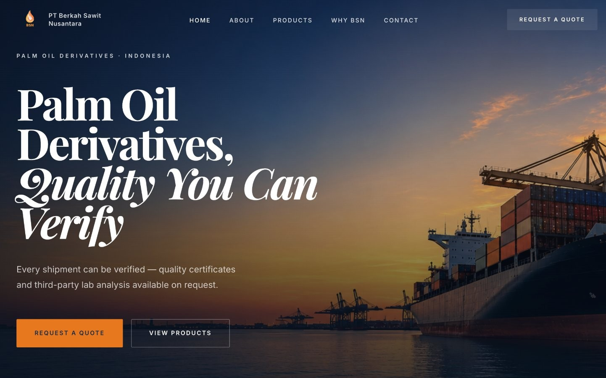
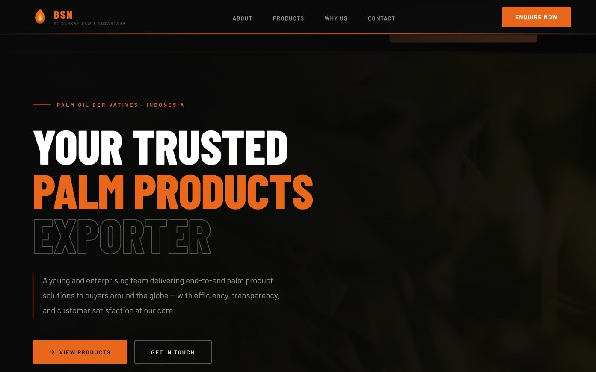
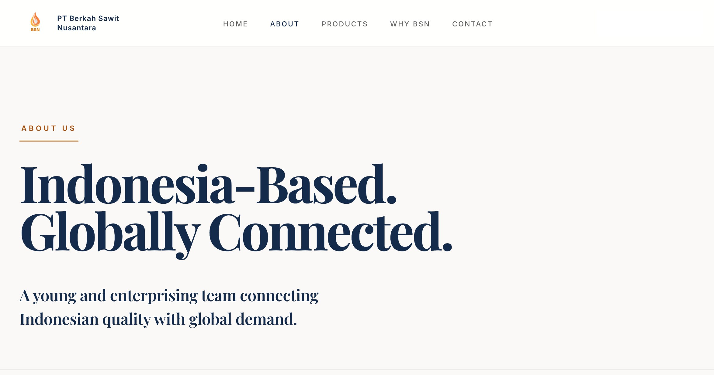
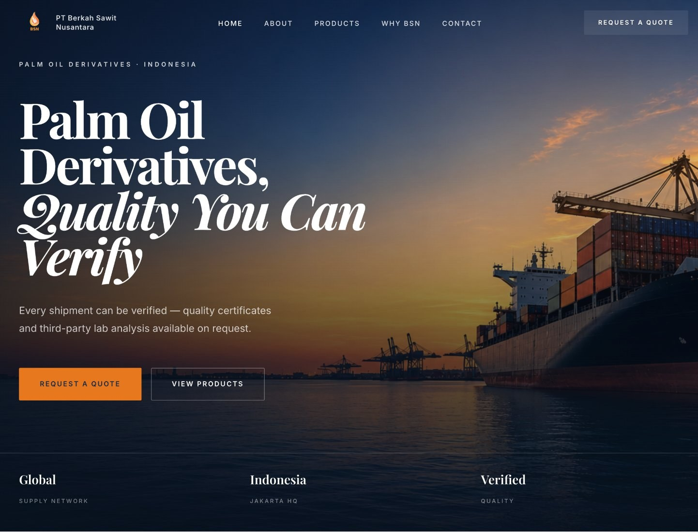
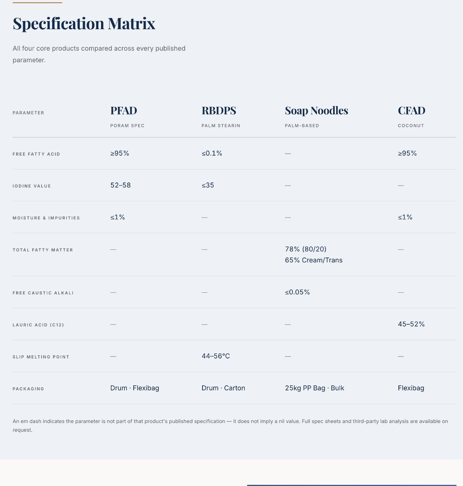
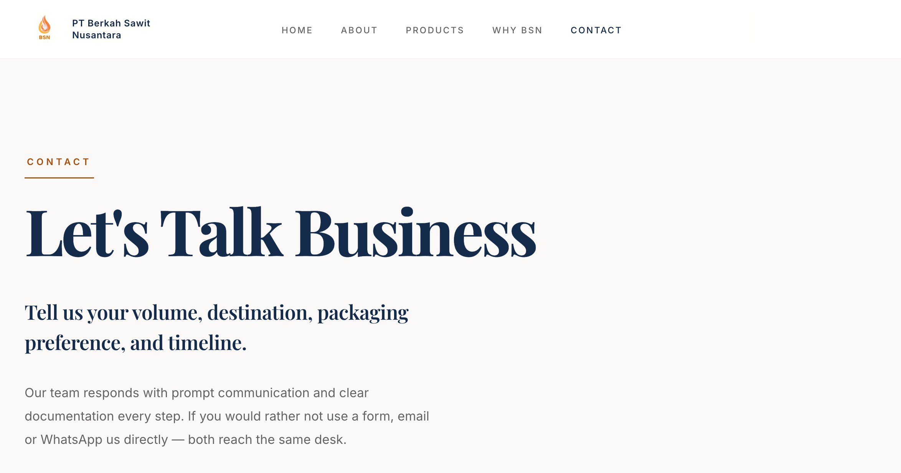
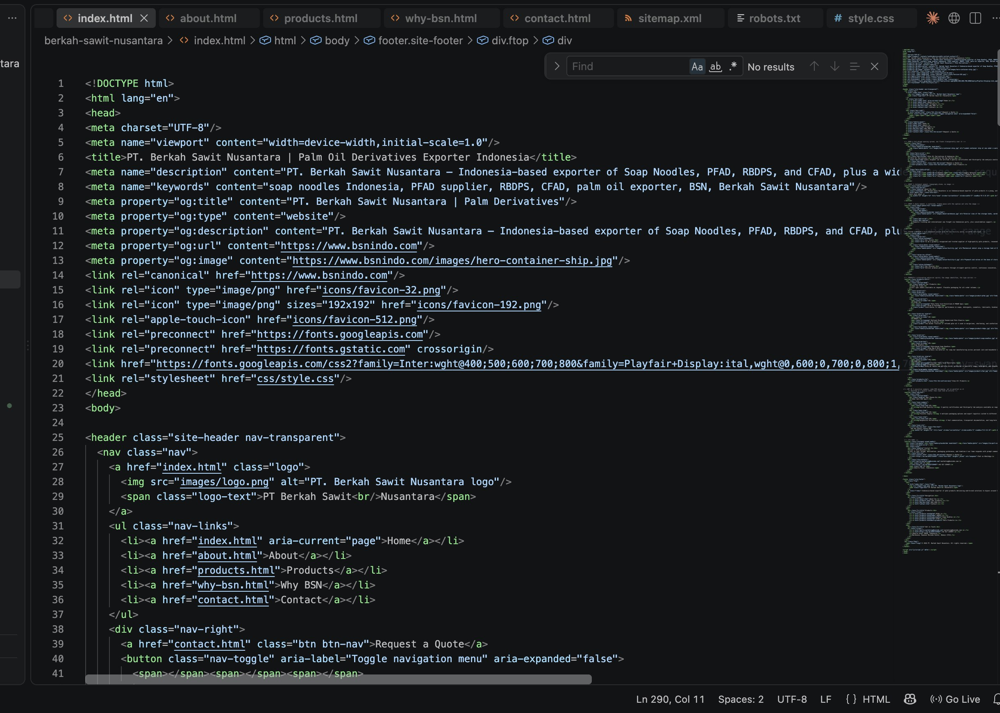
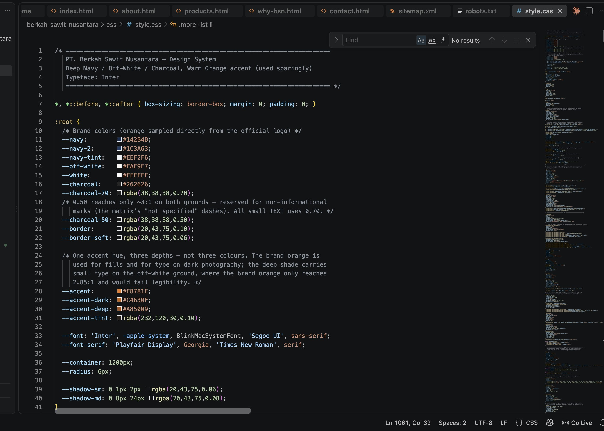
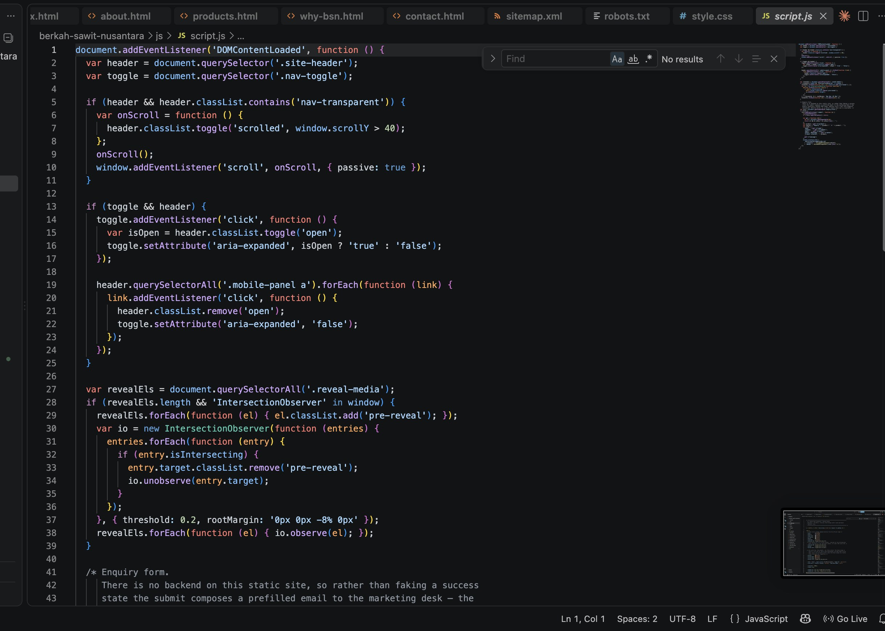
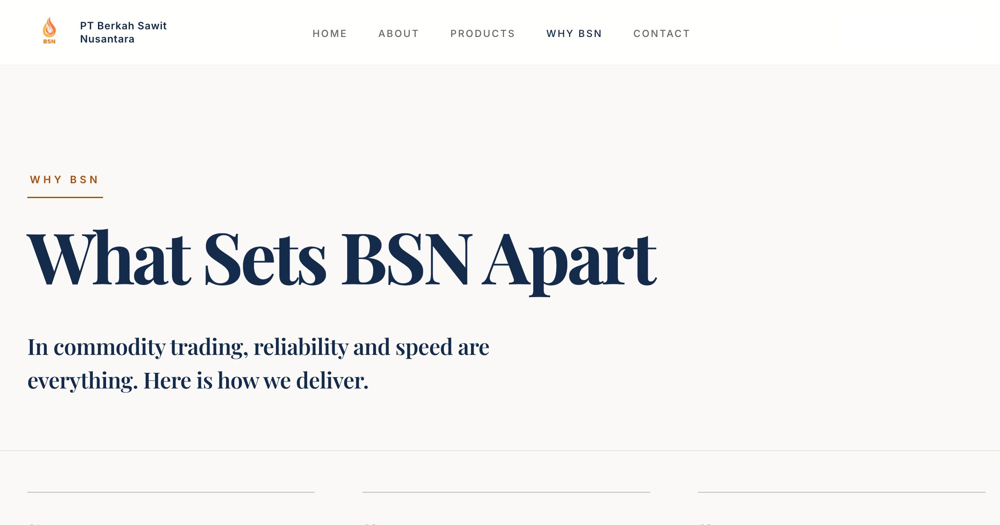

Reframing a company website into a business profile.

BSN came to me with a website that already had the basic information in place, but something was missing.
It explained what the company sold, but it didn't quite communicate who the company was.
The challenge was not simply to make it look better. It was to make the website feel like a proper representation of the business behind it.
The original website focused heavily on products and basic company information.
Nothing was necessarily wrong with that. But I felt the website could do more.
A potential buyer needs to understand who they're dealing with, what the company offers, and why they should trust it before they ever send an enquiry.
The original experience didn't create that journey clearly enough.
So I started by stepping back from the design itself.
What should a visitor understand first? What should they see next? And what should make them confident enough to start a conversation?

The whole design was built around a simple idea: "the website should communicate the business, not just the products."
That meant changing more than colours and layouts. I ended up reworking the visual direction, page structure, content hierarchy, product presentation, and even the way a visitor moves toward an enquiry.
I wanted the first impression to do some of the talking before someone even started reading that this is a real company. They know what they're doing. I can trust them enough to start a conversation.
I built the new structure around the questions a potential buyer would probably have.
This turned the website into more than a collection of pages.
It started to tell a story about the business.
The original visual language didn't quite match with the kind of company BSN needed to present itself as.
I wanted the redesign to feel established, industrial, and trustworthy, without falling into the usual corporate template look (You know what I mean :D). The visual system was built around:
The result was intentionally restrained. The website didn't need to shout. It needed to feel credible.

The homepage became the starting point for the entire experience.
Instead of opening with a generic company statement, the hero gets straight to the point: what BSN does, where it operates, and what it offers to the buyer.
From there, the page moves through company context, capabilities, products, differentiators, and finally the enquiry. The order was deliberate.
Understand → trust → explore → enquire.

I redesigned the product section around one thing -> making the information easier to understand.
Each product gets its own space, visual identity, description, and relevant specifications.
I didn't want to throw every technical detail at the visitor at once. The idea was to make the right information easy to find when someone actually needs it.

A corporate website can look beautiful and still be frustrating if the visitor doesn't know what to do next.
So I treated the enquiry path as part of the experience, not something to figure out at the end.
The contact page makes it clearer what someone should provide such as product interest, volume, destination, packaging preference, and timeline. Across the site, the CTA is ultimately pointing to the same thing: start a conversation.

This wasn't a huge SEO campaign with hundreds of pages. It was a company website, so I focused on getting the basics right from the start.
The goal was pretty simple. Make it clear to both search engines and people what each page is actually about.
For me, SEO here wasn't just about adding keywords. It was about making sure the structure of the website made sense in the first place.

I started with the structure. I figured out the site architecture, the hierarchy, and what each page actually needed to do.
For implementation, I used Claude Code to accelerate the coding process. But AI wasn't the finish line.
The generated code was just the starting point. I tested it, looked at what actually showed up on screen, changed what felt wrong, and kept refining it manually by using VS Code.
There was a lot of: generate → test → notice → change → repeat.
Some of the most important decisions happened after the first version already existed.
That's where the website started becoming mine, rather than simply something generated by a tool.


I've worked on my own website before. That's different.
When it's your own name, you can experiment. You can change your mind. You can break something and start again.
With a company website, the website becomes part of how people perceive the business. That responsibility changed how I approached the project.
I had to think beyond design. I had to learn how information architecture, content, SEO, code, visual direction, and business goals fit together, and, perhaps more importantly, how to decide what deserves priority.
This project also pushed me further into coding. Not because I wanted to become a full-time developer, but because I wanted to understand how to turn an idea in my head into something that actually works on a screen.
And sometimes, that meant trying the same thing several different ways before getting there.
The final result isn't meant to be the loudest website in the industry. It doesn't need to be.
It needs to make the right impression, communicate the business clearly, help potential buyers find what they need, and give them a reason to continue the conversation.
That was the real goal of the redesign. Not simply a better-looking website. A better representation of the company behind it.
